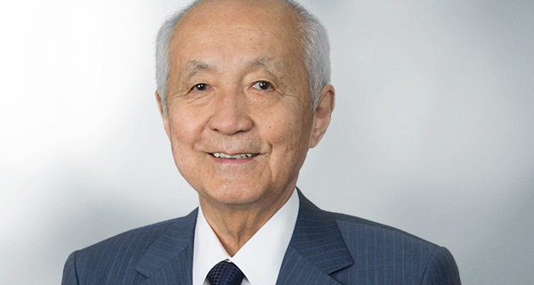

Board of Directors
| Chairman 山本 稔 Minoru Yamamoto |
||
| Representative Director and Vice Chairman 山本 洋子 Yoko Yamamoto |
||
| Representative Director and President 山本 拓真 Takuma Yamamoto |
||
| Director and Vice President 山本 景士 Keiji Yamamoto |
||
| Director 石川 竜太 Ryuta Ishikawa |
||
| Director 若林 賢也 Kenya Wakabayashi |
||
| External Director 垣添 忠生 Tadao Kakizoe |
||
|  | External Director 福川 伸次 Shinji Fukukawa |
|
| External Director 二川 一男 Kazuo Futagawa |
||
| Standing Statutory Auditor 大用 恭市 Kyoichi Oyo |
||
| Statutory Auditor 今谷 俊夫 Toshio Imatani |
||
| Statutory Auditor 千葉 恒久 Tsunehisa Chiba |